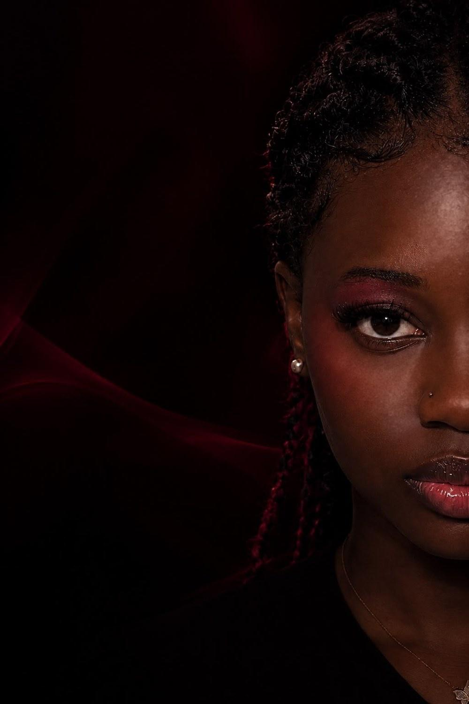

Développement web
- HTML
- CSS
- JavaScript
- PHP

Étudiante en informatique, j’aime comprendre pourquoi une solution devrait exister, à qui elle s’adresse et ce qu’elle peut réellement apporter.
Obtention du bac général.
Une année de formation.
Une année de formation.
MyDigitalSchool Lyon · deuxième année, parcours prévu jusqu’en 2028.
Des formations variées, mais un fil conducteur : l’informatique.
Des compétences en cours d’acquisition : je les développe au fil de mes projets.
Un stage au cours duquel mes missions ont évolué selon les besoins de l’équipe.
Polyvalence, adaptation aux besoins de l’équipe et participation à différents types de projets.
Ce qui nourrit ma curiosité en dehors du code.
Je suis étudiante en informatique et je m’intéresse à la conception de produits digitaux, au développement web et à la manière dont la technologie peut répondre à des besoins concrets.
Ce qui m’intéresse dans un projet, c’est de comprendre pourquoi cette solution devrait exister, à qui elle s’adresse et ce qu’elle peut réellement apporter.
Ma réflexion part souvent d’un problème qui m’interpelle, parfois une difficulté que je rencontre moi-même : d’autres vivent-ils la même chose ?
J’observe d’abord les solutions qui existent : comment elles fonctionnent, si elles sont faciles à trouver et à utiliser, et si elles répondent vraiment au problème.
Parfois une fonctionnalité existe déjà, mais noyée dans une application trop large. Je cherche alors une expérience plus simple, plus ciblée, mieux adaptée. Je ne crée pas pour innover à tout prix : je cherche la valeur réelle.
Je me mets à la place de ceux qui utiliseraient le produit : leurs habitudes, leurs difficultés, leurs attentes. Je confronte mes idées à d’autres points de vue, car mon expérience n’est pas celle de tous.
Comment l’utilisateur découvre-t-il le produit ? Comprend-il vite ? Où pourrait-il hésiter ? Ces questions guident mes choix de fonctionnalités et d’interactions.
Une interface ne doit pas seulement être esthétique : chaque élément doit avoir une raison d’être.
Une solution pertinente au départ peut révéler ses limites. J’aime questionner mes choix et comparer les possibilités, puis aller au contact du terrain, notamment dans le sport et le football : supporters, joueurs, staff, et les problèmes auxquels le digital peut répondre.
En parallèle, je continue de développer mes compétences : chaque projet est une occasion d’apprendre et d’expérimenter.
Comprendre ce qui mérite d’être créé, pour qui, et pourquoi.